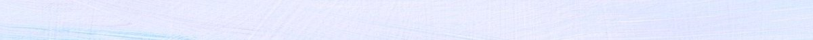
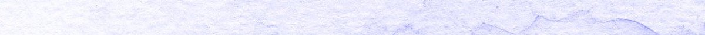
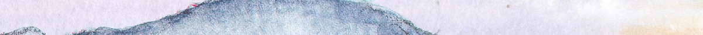

Velkommen
På denne nettsiden vil du kunne lese om ulike temaer knyttet til webutvikling. Dersom du lurer på noe, er det bare å ta kontakt ved å følge linken under, som fører til kontaktsiden vår. Velkommen.
UU vs SEO
Les mer om universalutforming og søkemotoroptimalisering. Denne artikkelen forklarer hva dette er, og hvordan det kan implementeres. Her vil du også finne en tabell som viser hvordan søkemotoroptimalisering og universalutforming virker inn på design og responsitivtet.
Analyse
Les mer om analyse. Denne artikkelen går inn på resultatene av analyse gjennomført for denne nettsiden og viser hvilke endringer som er gjort.
CMS
Les mer om CMS. Denne artikkelen presenterer ulike typer CMS og diskuterer forskjellen mellom headless og tradisjonelt CMS. Her vil du finne en tabell som viser både fordeler og ulemper og forskjeller og likheter mellom ulike CMS-typer.